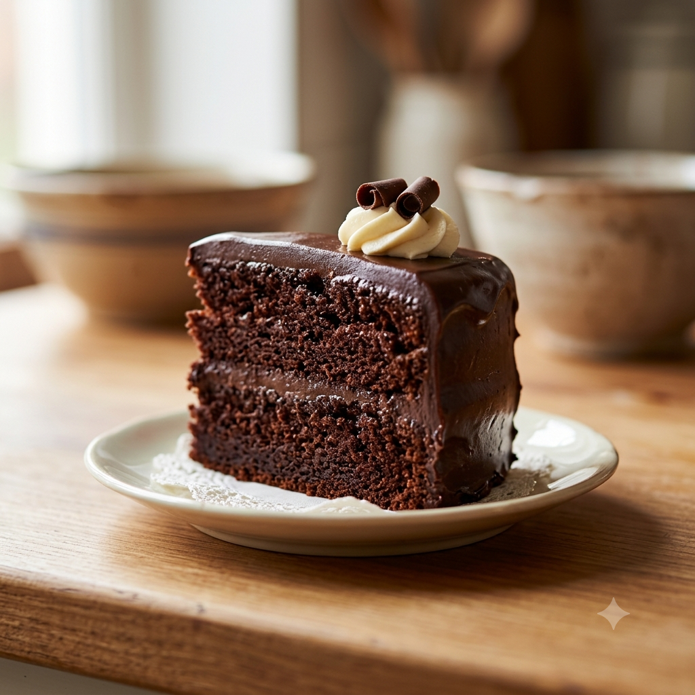
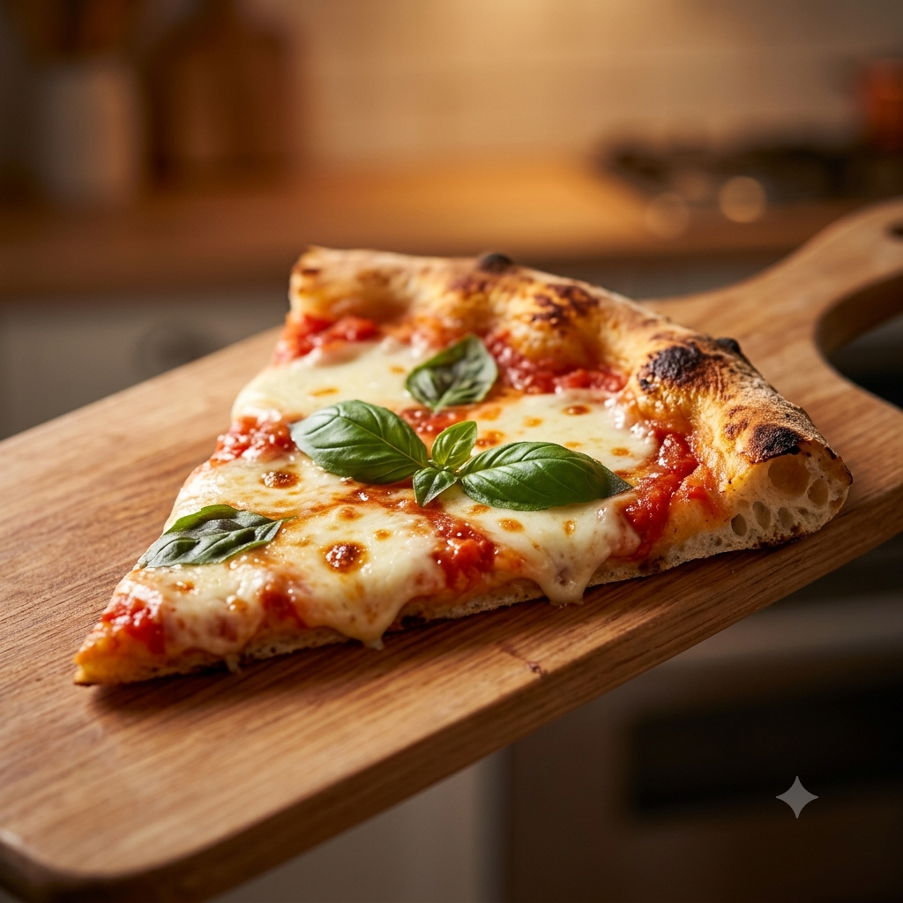

Bolo de Chocolate Perfeito
Por: Ana Dhulia
Boas-vindas ao meu blog! Hoje trago a receita de um bolo fofinho e com cobertura super cremosa.
Fonte: Receitas de Família
Vou compartilhar as melhores dicas e receitas do universo culinário

Por: Ana Dhulia
Boas-vindas ao meu blog! Hoje trago a receita de um bolo fofinho e com cobertura super cremosa.
Fonte: Receitas de Família

Por: Ana Dhulia
O truque para uma massa crocante por fora e macia por dentro está no tempo de descanso da fermentação.
Fonte: TudoGostoso

Por: Ana Dhulia
Aprenda a fazer panquecas fofinhas em menos de 15 minutos para um café da manhã especial.
Fonte: Panelinha

Por: Ana Dhulia
O segredo para um cookie macio no centro é usar manteiga derretida e açúcar mascavo na massa.
Fonte: Cozinha Prática

Por: Ana Dhulia
Uma receita reconfortante para os dias frios, combinando abóbora assada com um toque de noz-moscada.
Fonte: Chef em Casa

Por: Ana Dhulia
Comece o dia com energia misturando couve, maçã, gengibre e um toque de limão bem gelado.
Fonte: Vida Saudável